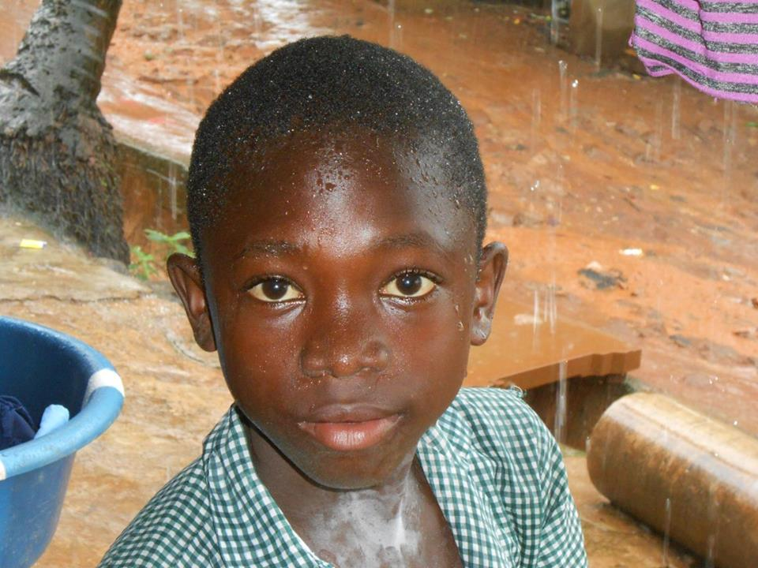

Third world countries are hard. The bloated bellies of young children starving break your heart. You see the brokenness of an impoverished people who know nothing different. Sometimes the smells and filth make you want throw up. Yet you press on because of a contagious love you want to spread. You want to see revival in Falcon’s Bridge, ruled by drug use and alcoholism. You want to see revival in Magazine Wharf where adolescent females sell themselves for sex so they can support themselves and their families. You want to see revival in Kroo Bay as you watch children play in the river filled with sewage and pigs and garbage.
And as you seek revival you face discouragement. When you walk into a slum to share the gospel, but the only people you can find are under the influence, so you just cry out to God for the healing for these people’s brokenness. When you walk into a slum and talk to a group of teen boys who break out into a fist fight as soon as you leave, you ask God to heal their community.
But there are rewarding moments too. When you walk into a slum that was torn apart from rival gangs who have now turned to Jesus after Youth for Christ refused to give up on their community, you get a glimpse of what Jesus is doing in West Africa. When you walk into a slum and a Muslim council woman asks you to pray healing over her sick baby, you realize that people can see the genuine love and care you have for them.
It’s moments like those that make all the pain so worth it. It’s moments like those that give you the strength to carry on. And it’s moments like those that make you want to continue sharing the contagious love of Jesus.
I pray that you continue to spread the contagious love of Jesus right where you are, whether at home with your family or overseas in Sierra Leone, be contagious!

Soccer ministry in a slum previously broken by violent gang activity.
